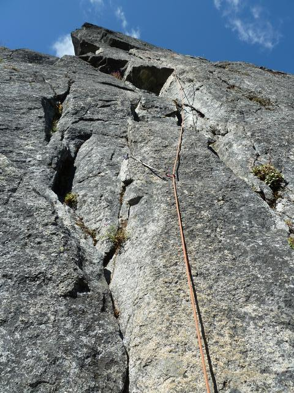
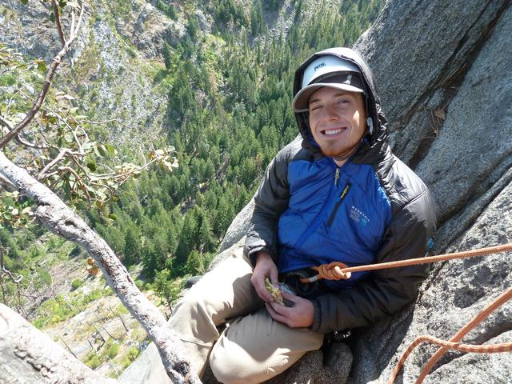
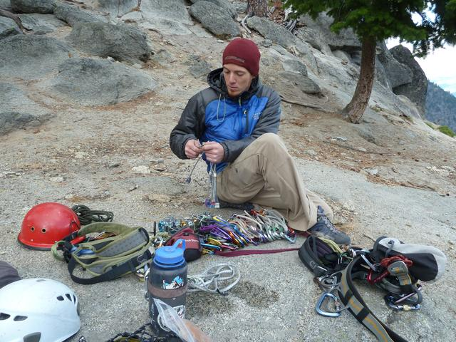
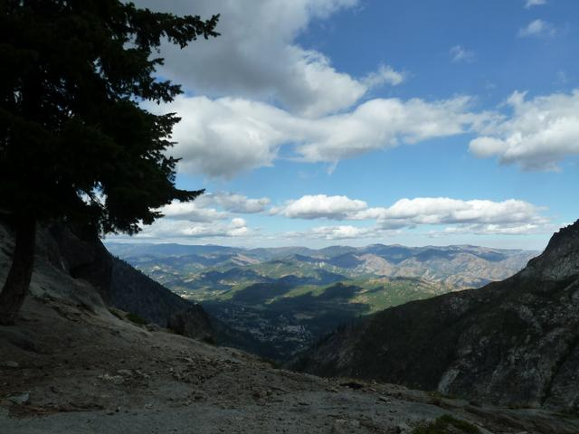
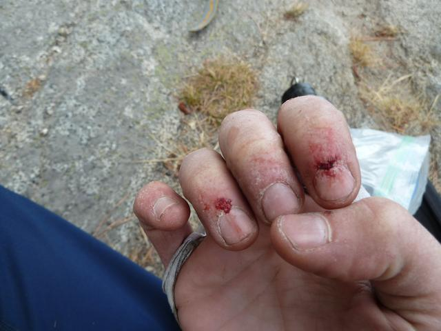
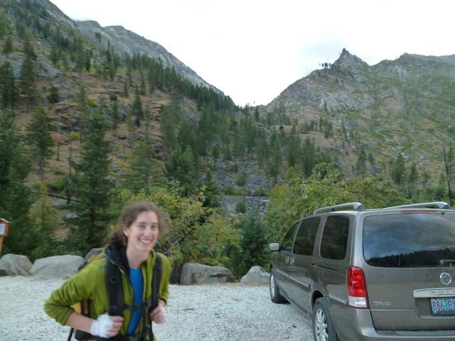

Outer Space 09-10-2012
Hannah and I climbed Outer Space this Monday. It was super fun.
We left Seattle late Sunday morning and totally avoided weekend traffic on the way out highway 2. We stopped at Index and climbed Toxic Shock and the 5.7 crack across the gulley to get Hannah back into crack climbing shape. It was a nice way to break up the drive to Leavenworth.
We spent a super low impact night at a not totally legit but very nice spot, and started up the Snow Lakes trail at 7AM. Our strategy was to carry only what we could climb with so as not to leave anything at the base that we might have to double back for. Hannah wore a pack with food and jackets, and I carried the rope coil-backpack style and the rack on a sling over my shoulder.
About 1/4 mile from the parking lot I realized that I had neither brought the guidebook nor looked over the route description one last time, of which I had meant to do at least one. I decided that I knew the pitches well enough and we didn't really want to carry the book anyway.
Approach went quicker than expected and we were at the base of the climb at 8:30. Or at least, near the base of the climb. I could recognize two tree ledge but I wasn't sure what the best way to get up there was. After some hemming and hawing, I started up a low angle corner that seemed promising. It had some greenery in the cracks, but definitely had been climbed before. About 10 feet after passing a finger crack on the left I passed a bush with a rappel sling around it, and topped out on a block. I looked down and saw anchors at the top of the finger crack that I had passed by, with a clear route from there leading to two tree ledge. That explains the rappel bush. I elected to just down climb back to the finger crack and then up the crack to the belay. Route finding (mostly) success!
I've heard about the finger crack traverse on the third pitch, but it was different than I expected. Also I found it not to be the crux of the pitch, which I had thought it would be. It was a nice climb:

Now, it turns out that in my "memorization" of the pitches, I had subtracted a pitch between the finger traverse and the head wall hand crack. So when I stopped to belay at the top of the finger traverse, I thought I had stopped early and that the hand crack must begin just around the corner or something. We quickly exchanged gear and I led off on what I thought would be a short extra pitch. This set me up for quite a surprise when I found myself running it out 20 or 30 feet on admittedly easy knobs, and still no hand crack in sight. Well actually I could see it at that point or I wouldn't have set out across the knobs. Anyway, I was happy when I finally got to the base of the crack:

The next two pitches were everything I'd dreamed and more. Endless perfect hand crack, with knobs wherever you want them. For hand sized pieces, I'd brought two 2" cams, one 3" cam, and one hand sized gold hex. These had to be rationed carefully, and there were still some healthy runouts. Pitch 6 was almost as good. With a 70m rope it was no problem going all the way to the top from library ledge, but it might have been a stretch to have enough slack to build an anchor and get back to a reasonable position to belay with a 60m rope.
Organizing at the top:

What a niiiiice day:

Hannah got a little bloody:

I'd heard some horror stories about the walk down from snow creek wall. At this point in the season, the trail is well marked with cairns if you keep your eyes out. For the first bit, I was thinking that people had over-hyped the difficulties. Well, it never really got more difficult, but it kept going and going and going. Never completely sketchy, but never totally safe either for a long time. I can see why people complain, and if you lost the trail it could get bad quickly. Luckily no goats blocked our way.
Happy to be back with plenty of daylight:

I'm curious what others have brought for a rack on this climb. I had doubles in Camalots .5 through 2", and one 3". Mastercams 0 through 3 and offset Mastercams 0/1, 1/2, and 2/3 (my new favorite toys). 1 set of nuts and 1 gold hex. I found that I used all my cams on several of the pitches, after leaving some pieces at the previous anchor and then building a new one. I didn't feel like I was sewing it up. I felt like it was a lot of gear to bring, but I might bring a couple more pieces if I ever do it again.
This post was originally published as a UW Climbing Club trip report.